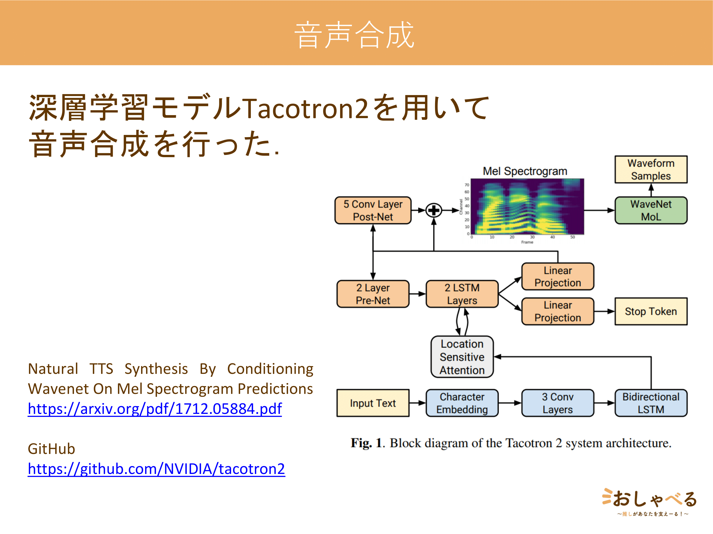
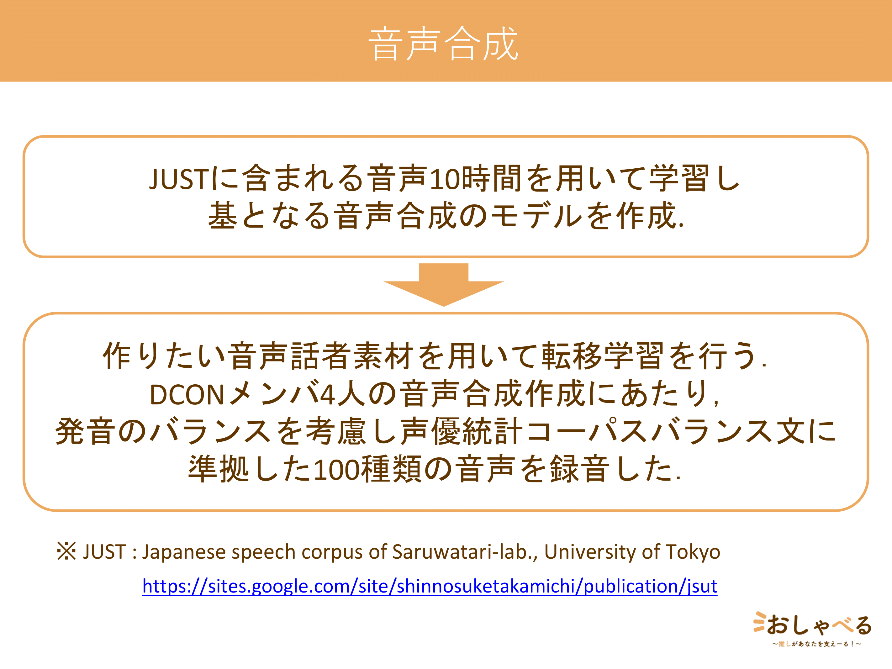
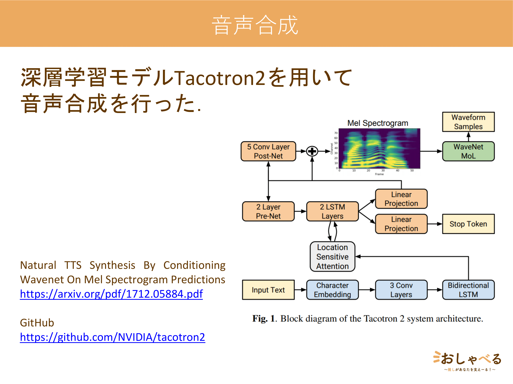
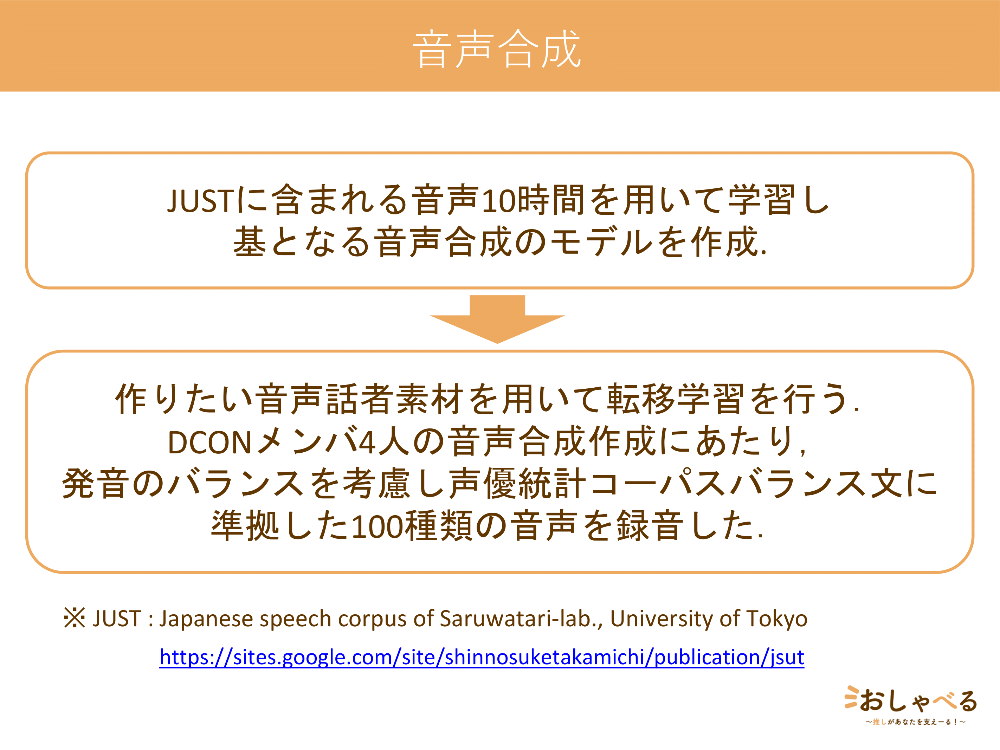

シマエーる
学生向けコミュニケーションロボット シマエナガのぬいぐるみが励ましたり，応援したりしてくれます！ 手のひらサイズで持ち運びが便利，見た目も恥ずかしくない．癒されます．． 高専プロコン2020にて発表
学生向けコミュニケーションロボット シマエナガのぬいぐるみが励ましたり，応援したりしてくれます！ 手のひらサイズで持ち運びが便利，見た目も恥ずかしくない．癒されます．． 高専プロコン2020にて発表
自由な声と喋れるスマートスピーカーの追加コンテンツ
自分の推しのぬいぐるみやパペットをおしゃべるに被せることで,推しとおしゃべりすることが可能に!
DCON2021,HIT2020にて発表
学生のための新しいSNS.閲覧時間と記録時間や1日にコメント可能な回数を設定し，SNS依存をみんなで予防しながら楽しめるサービス 政治や企業に関する広告が流れるのでためになる M-BIP2021,ヒーローズリーグ2021にて発表 / Timory
2021 授業でHTMLやCSSについて勉強し，YouTubeなどを参考に作成
Javascriptの練習も兼ねてある
7種類のページへ飛ぶことができます
webページへ
クラスメイトの3人で協力して作成.
Bootstrapを使用.
あいけんwebページへ
あいけんwebページリポジトリ
Design:HTML5 UP にて良いデザインが見つかったので少しアレンジして公開
今までに作った作品を整理しながら現在進行形で作成中・・・
GCONに出そうと思ったがテスト期間が被り，締め切りに間に合わなかった． ISBNコードを入力すると，そこから楽天APIを使用し情報を取得，djangoのAPIにその情報を格納することで書籍管理ができる．バーコードリーダを利用すると大量に書籍を追加することができる．編集，検索，削除も簡単． book-management
api部分であるためrails-spaとこのサーバーを立てることでbook_managementと同じ動きができる． [http://localhost:3000/book] http://localhost:3000/ではバイトで作成した[article]bool_managementの元となったアプリができる また，djangoのapiと通信できるが，実機ビルドした場合はdjangのセキュリティーの影響で値を受け取ることができない django-api
apiを開発するた時に勉強した.djangoとpythonに慣れなくてできなかった ログインアプリ(バグっている),djangoチュートリアルであるpollsアプリ,匿名ブログアプリ，ウェブサイトとして画像や画面遷移ができるアプリが入っている django-website
9-11からflutter作成 dio camera video-player ffmpeg audio-recoder image-picker stt ファイルに書き出し sqfliteなど色々なプラグインを使用 UIの練習としてYoutubeを作成，flutterの公式チュートリアルであるenglish_wordsにいいねを押すもの，apiからjson形式でデータを取得したり通信できるものもある とてもぐちゃぐちゃで反省している flutter-plugin-example
友達にflutterを布教したくてチュートリアルとして作成したプロジェクト 意外と難しいものになってしまった． swiftでクイズアプリを作ったことがあるため，今ならflutterでさらに良いものを作成できると思い作成した． csvファイルに問題文を入れるだけでクイズで遊ぶことができる csvファイルをQuiz構造体に変更するのが一番難しかった flutter-quiz-app
flutterで本を管理する firebaseで管理する youtubeの動画通りに作成 youtubeの動画です firebaseの資料に従ってやっても詰まってしまうものが多くあるらしいが，この動画どおりにやると，2021.9時点では詰まることなく画像のアップロードまでできた． flutter-todo-app
検索機能やログイン機能，QRコードをアドレスから作成する機能，チャットアプリができます 授業中に習ったものから演習で作ったものまである xamppフォルダ内のhtdocsの中のxamppフォルダに入れる htdocs
高専1年生の時に授業で作成した演習や個人で作った作品が入っている． 1年生の時ぷよぷよと青鬼を作成 ぷよぷよは1から自分で考えて作成したが， 横方向の操作に弱く，めり込む 消えない, また，nextが動作していなかったり，右上に謎の描画がある,バグる またリファクタしてしっかり動くものを作りたい 青鬼はバグで追いかけてこない時がある，プレイヤーと重なっていると消える時があるという致命的なバグがある processing
8-30あたりに夏休みの宿題として4時間ほどで作成 ほぼcssにのみ時間がかかった ラインの文字部分はネットから拾ってきたもので，スマホは自作,しかし絶対値で場所を指定しているため，ウィンドウのサイズが変わるとスマホの外枠と画面が分解されてしまう rails-line-app
楽天APIやbook_managementを作成する際にテストするために作成したリポジトリ bootstrapを使用 django-apiリポジトリと対応 rails-spa
課題として作成したSPA シングルページアプリケーション jsで通信するため，リダイレクトしなくても良い django-rest-frameworkのentriesでデータベースと通信このリポジトリとdjango-rest-frameworkを使用することで試すことができる しょぼい 取得するデータのidを選択して，データを取得ボタンを押さないと取得できない spa
swift admob bmi計算 フォント使用 qiitaのapiを取得 button table 文字が動くのサンプルが使用できる admonbは使用できない ボタンを押すと鳴き声がするアプリ どれもYouTubeの動画を見て作成 青色のxcodeのprojectを開くと起動する swift
電卓アプリを作ろう より作成 簡単な計算しかできない swift-calculator-app
youtubeにあったクイズアプリを作ってみよう！という動画に沿って作成 楽しく,詰まることなく作成できた クイズアプリならリリース簡単にできると聞いて作ってみたが，最近は審査が厳しいらしくてまだやっていないがもっとユニークで面白いものにしないと通らない気がする クイズアプリを作ろうPart1 クイズアプリを作ろうプレイリスト swift-quiz-app
xampp http://localhost/xampp/ 編集やコメント，いいね,投稿，編集ができます．動画とコメントと画像が可能です コードがすごく汚いです．いいねのところのcssが途中でひどいことになっています phpで授業で習ったことを応用して作成 xampp-php
自由な声と喋れるスマートスピーカーの追加コンテンツ
仕様書やスライド作成を担当
DCON2021にて発表
APIサーバ : Node.js
合成音声作成 : Python, Tacotron2
https://github.com/ishikawa-nct-iken/oshaberu_clova
 



学生向けコミュニケーションロボット
高専プロコン2020にて発表
仕様書やスライド作成を担当
本体 : Google AIY Voice Kit
プログラム : Python
音声認識 : Google Assistant API
https://github.com/ishikawa-nct-iken/shimayell_aiy
高校生のためのSNS
ヒーローズリーグ2021,M-BIP2021にて発表
フレームワーク : Ruby on rails
合成音声作成 : Python, Tacotron2